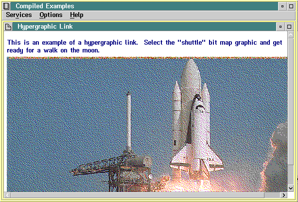

Graphic illustrations are usually bit maps. Bit maps can be monochrome or color and can be created with the Presentation Manager Icon Editor, which is available in the IBM Developer. The bit map resides in a separate file called by IPF at compile time.
The artwork tag (:artwork.) identifies the name of the bit-map; for example:
:artwork name='mybitmap.bmp'.
The :artlink. and :eartlink. tags define areas of the bit map that are selectable hypergraphic. This means the user can link from the artwork to additional information. If no :artlink. tag is used, no hypergraphic areas are defined.
If you want the entire bit map to be hypergraphic, the tagging is simple. You have only one art link, and you do not have to define the area. The following shows the tagging required to establish a link:
Input Example
:p.This is an example of a hypergraphic. Select the Shuttle graphic and get ready for a walk on the moon. :artwork name='shuttle.bmp'. :artlink. :link reftype=hd res=001. :eartlink.
Notice there is no :elink. tag. Instead, there is an :eartlink. tag. An :elink. tag is required only to denote the end of a hypertext link.
You also need to specify the identifier in the tagging for the window you are linking to. For example:
:h1 res=001.Apollo 11

The entire bit map as a selectable hypergraphic area.
When the user double-clicks on the hypergraphic area, the window whose identifier is 001 ("Apollo 11") appears.